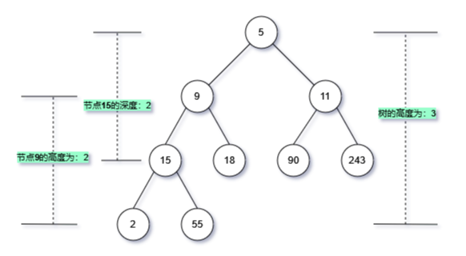
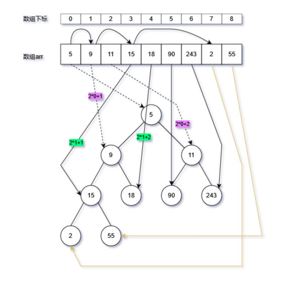
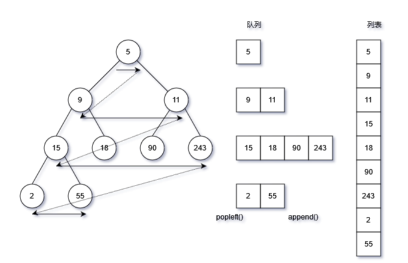
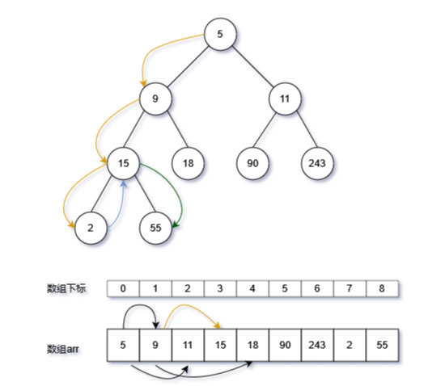

Python二叉树的遍历
一、二叉树几个概念

注意区分几个概念：
- 二叉树的高度与层；
- 二叉树的高度是从最底部起算，而深度是从根节点起算；
基本术语
- 节点所在的层 level：从顶至底递增，根节点所在层为 1
- 节点的度 degree：节点的子节点的数量。在二叉树中，度的取值范围是[ 0、1、2] 。即节点所拥有叶子节点的数量
- 二叉树的高度 height：从根节点到最远叶节点所经过的边的数量。
- 节点的深度 depth：从根节点到该节点所经过的边的数量。
- 节点的高度 height：从距离该节点最远的叶节点到该节点所经过的边的数量。
树的类型
- 完美二叉树：所有层的节点都被完全填满，满二叉树，叶节点的度为0，其余所有节点的度都为2；若树的高度为h，则节点总数为
2^(h+1)-1，如一个高度h=3的满二叉树，即有根节点到底节点共有4层，一共有15个节点（第一层1个，第二层2个，第三层4个，第四层8个） - 完全二叉树：只有最底层的节点未被填满，且最底层节点尽量靠左填充。
- 完满二叉树：除了叶节点之外，其余所有节点都有两个子节点，即节点的度，要么为0，要么为2
- 平衡二叉树：任意节点的左子树和右子树的高度之差的绝对值不超过 1
二、列表转换为二叉树

将列表元素按照层顺序，逐层填满二叉树，即转换之后的二叉树是一个完全二叉树 计算公式：
- 当前元素的下标为i，如：第0个元素；
- 其左节点的下标为i×2+1，如：第0个元素的，左节点下标为1；
- 其右节点的效标为i×2+2，如：第0个元素，右节点的下标为2；
- 整体上通过递归方式实现，边界（返回）条件为列表下标越界，或者元素为None；
- 由于要获取元素的左、右两个子节点，因此递归中需要两次调用函数本身，获取左右子节点
# 使用递归方式，将list转换为二叉树，按层的顺序实现转换
# 先判断arr的下标start是否越界，然后再新建节点
def create_btree(arr, start):
if start < 0 or start >= len(arr) or arr[start] is None:
return None
root = TreeNode(arr[start])
root.left = create_btree(arr, start * 2 + 1)
root.right = create_btree(arr, start * 2 + 2)
return root
三、广度优先遍历

广度优先（breadth-first traversal），即按层遍历二叉树的所有节点，逐层访问全部节点的方式
实现方式：（队列）
- 使用标准库（collections)中的deque双向链表类作为列表
- 使用while循环，当队列为None是终止循环
- 读取根节点，同时获取左右子节点，按照顺序将左右节点加入(append)队列；append
- 弹出（popleft)队列中节点，同时获取其左右自节点，按照顺序将左右节点加入队列;
- 弹出队列的节点时，将节点元素内容存入列表。
# 广度优先（breadth-first traversal）方式遍历二叉树
# 以队列方式实现，按层进行遍历
def bfs_travel(root):
res = []
queue = deque()
queue.append(root)
while queue:
node: TreeNode = queue.popleft()
res.append(node.val)
if node.left is not None:
queue.append(node.left)
if node.right is not None:
queue.append(node.right)
return res
四、深度优先遍历

深度优先分为前序、中序以及后序方式，区分的依据为访问根节点的顺序，前序即为先访问根节点，然后依次访问左右节点；中序为先访问左节点，然后依次访问根、右节点；后序为依次访问左节点、右节点、根节点。 二叉树搜索即为中序方式，左节点<根节点<右节点 深度优先的实现方式依赖于递归
- 边界（返回）条件：节点为None
- 然后依次调用函数本身，访问左、右节点，根据前序、中序、后序需要，访问根节点元素
前序遍历
res_pre=[] # 深度优先就是使用递归方式 # 深度优先（depth-first search）：前序遍历 # 前序遍历：根节点-左子树-右子树 # 中序遍历：左子树-根节点-右子树 # 后续遍历：左子树-右子树-根节点 def dfs_pre(root:TreeNode): # 递归边界（返回条件）：节点为None if root is None: return # 访问根节点 res_pre.append(root.val) # 递归处理左子树 dfs_pre(root=root.left) # 递归处理右子树 dfs_pre(root=root.right)中序遍历
res_mid=[] # 深度优先遍历：中序方式，左子树-根节点-右子树 # 如果是一个有序的二叉树，中序遍历出来的元素就是一个有序的列表，左节点< 中节点（根节点） < 右节点 def dfs_mid(root:TreeNode): if root is None: return dfs_mid(root=root.left) res_mid.append(root.val) dfs_mid(root=root.right)
五、完整代码
from typing import Optional
# deque是collections中的双向链表实现
from collections import deque
class TreeNode:
def __init__(self, val: int):
self.val: int = val
self.left: Optional[TreeNode] = None
self.right: Optional[TreeNode] = None
# 使用递归方式，将list转换为二叉树，按层的顺序实现转换
# 先判断arr的下标start是否越界，然后再新建节点
def create_btree(arr, start):
if start < 0 or start >= len(arr) or arr[start] is None:
return None
root = TreeNode(arr[start])
root.left = create_btree(arr, start * 2 + 1)
root.right = create_btree(arr, start * 2 + 2)
return root
# 广度优先（breadth-first traversal）方式遍历二叉树
# 以队列方式实现，按层进行遍历
def bfs_travel(root):
res = []
queue = deque()
queue.append(root)
while queue:
node: TreeNode = queue.popleft()
res.append(node.val)
if node.left is not None:
queue.append(node.left)
if node.right is not None:
queue.append(node.right)
return res
res_pre=[]
# 深度优先就是使用递归方式
# 深度优先（depth-first search）：前序遍历
# 前序遍历：根节点-左子树-右子树
# 中序遍历：左子树-根节点-右子树
# 后续遍历：左子树-右子树-根节点
def dfs_pre(root:TreeNode):
# 递归边界（返回条件）：节点为None
if root is None:
return
# 访问根节点
res_pre.append(root.val)
# 递归处理左子树
dfs_pre(root=root.left)
# 递归处理右子树
dfs_pre(root=root.right)
res_mid=[]
# 深度优先遍历：中序方式，左子树-根节点-右子树
# 如果是一个有序的二叉树，中序遍历出来的元素就是一个有序的列表，左节点< 中节点（根节点） < 右节点
def dfs_mid(root:TreeNode):
if root is None:
return
dfs_mid(root=root.left)
res_mid.append(root.val)
dfs_mid(root=root.right)